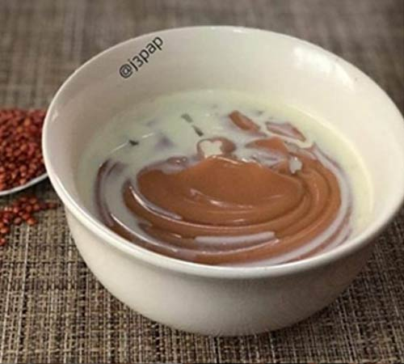
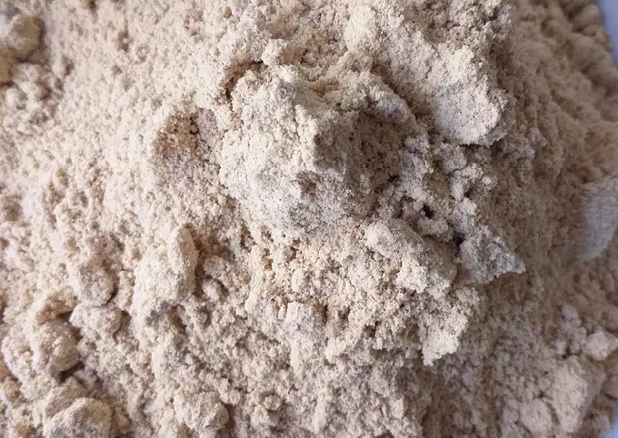

Spicy Tom Brown

Description
A special blend of toasted grains or even with seeds and nuts.
Delicate and hearty meal rich in protein.
Depending on how you would like the thickness, add water as needed.
Made with love from LOVE.
Cooking time 5 - 7 mins.
Ingredients
The Powder

- Half cup roasted corn
- Quarter cup roasted groundnut
- Half cup Soya bean
- Half cup rice
- Half cup Millet
- Half cup yellow corn
- Half cup beans
- Half cup Tiger nut
- Half cup Date
The Porridge
- 600litres of water
- A glass of milk
- 2 - 3 cups of powder
- 1 teaspoon cinnamon
- Cayenne
- Cloves
- Ginger
Steps / Preparation
Making the powder
- Wash millet, tiger nut, corn and sun dry it.
- Soak beans and soybean, wash and remove husk, then sun dry.
- Pit dates, wash and dry
- Fry groundnut
- Fry dried ingredients on low heat and set aside.
- Combine all ingredients and take to the grind
- Seive and store powder
Making the porridge
- Boil water in a pot.
- Pour the tom brown into a bowl
- Mix thoroughly to form a smooth mixture.
- Pour the paste slowly when the water starts simmering (keep stirring evenly till thick).
- Add cayenne and cinnamon to the paste.
- Add sweetener of choice.
- Lower the heat when mixture begins to boil - continue stirring
- Give it at least 8 to 10 mins to cook